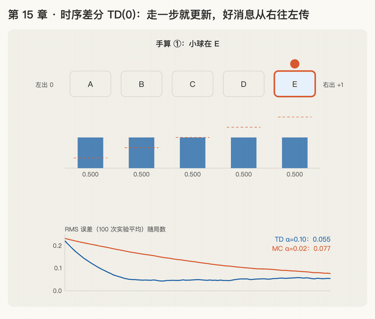

第 15 章 · 时序差分 TD：走一步就更新，拿"下一步的估计"当目标
本章回答：能不能不等一局结束就更新价值？"用一个估计去更新另一个估计"靠得住吗？TD 和 MC 谁更好？
讲解日期：2026-11-13 · 上一章：第 14 章 蒙特卡洛 · 下一章：第 16 章 SARSA 与 Q-learning
对应原文：Sutton & Barto §6.1 TD Prediction（L8624–L8995，式 6.2，算法框 L8665，TD 误差 L8727–L8745）、§6.2 Advantages（L8996–L9206，例 6.2 随机游走）、§6.3 Optimality of TD(0)（L9207 起）
本章缩写：TD = Temporal Difference（时间上的 / 差分：前后两个时刻的估计之差）；TD(0)：最简单的一步 TD，括号里的 0 是 λ = 0（第 22 章 GAE 会讲 λ）；δ：希腊字母 delta（读"德尔塔"），TD 误差；bootstrapping：自举（原意"拽着自己的鞋带把自己提起来"）。全部缩写见 附录 · 缩写与术语表
讲解
第一步：天气预报的类比：明天的预报比今天的更准（2026-11-13）
MC 的毛病（第 14 章第四步）：要等一局结束，拿到真实回报 \(G_t\) 才能更新。
类比：预测周六会不会下雨。
- MC 的做法：周一预测 30%，然后一直等到周六，看真的下没下，再回头改周一的预测；
- TD 的做法：周一预测 30%；周二一看新的预报说 50%，就马上把周一的预测往 50% 挪一点。不用等到周六。
为什么可以这样？因为周二的预测比周一的多知道了一天的信息，通常更准一点。用"更准一点的估计"去修正"老的估计"，就不用等最终结果了。
放到价值上：在状态 \(S_t\) 走了一步，拿到奖励 \(R_{t+1}\)，到了 \(S_{t+1}\)。这时：
- 原来的估计：\(V(S_t)\)；
- 多知道一步后的估计：\(R_{t+1} + \gamma V(S_{t+1})\)（实际拿到的奖励 + 下一个状态的估计）。
后者用到了一个真实发生的奖励，比前者多了一点真信息。
一句话：TD 不等最终结果，拿"走一步后的新估计"去修正"老估计"，像用周二的预报修正周一的预报。
第二步：TD(0) 的更新公式，一个个符号读（2026-11-13）
TD(0)（式 6.2，L8653–L8658）：
套第 13 章的句式"新 = 旧 + 步长 × (目标 − 旧)"：
| MC（式 6.1） | TD(0)（式 6.2） | |
|---|---|---|
| 目标 | \(G_t\)：整局真实回报 | \(R_{t+1} + \gamma V(S_{t+1})\)：一步真实奖励 + 下一状态的估计 |
| 什么时候能更新 | 一局结束 | 走完一步 |
TD 误差 δ（L8727–L8740）：方括号里那一项叫 TD 误差：
读作：走了一步以后发现"比原来估计的好了多少"。δ > 0：比预期好，把 \(V(S_t)\) 调高；δ < 0：比预期差，调低。
用随机游走手算两步（第 14 章的环境；初值全是 0.5，α = 0.1，γ = 1）：
① 在 E 往右走出去，奖励 +1，到终点（终点价值是 0）：
② 下一局，从 D 走到 E，奖励 0：
看到了吗：D 这一步自己什么奖励都没拿到，但因为 E 的估计变高了，D 也跟着变高了一点。好消息从 E 一步步往左"传"，不用等 D 自己哪天赢一局。
一句话：TD(0) 的目标是"一步奖励 + γ × 下一状态的估计"；方括号是 TD 误差 δ；好消息会一步步往前传。
第三步：用估计更新估计：bootstrapping（2026-11-13）
疑问：\(V(S_{t+1})\) 本身也是个不准的估计，拿它当目标靠得住吗？
这个做法叫 bootstrapping（自举）（L6531、L8708–L8714）：用自己的估计去更新自己的估计。第 10–12 章的 DP 也是这样做的（右边用的是旧的 \(v_k\)）。
TD 把 MC 和 DP 的优点拼在一起（L8701–L8714）：
| 用真实采样吗（不用知道 p） | 用别的估计吗（bootstrap） | |
|---|---|---|
| DP | 不，按 p 把所有可能加权 | 是 |
| MC | 是，用真实回报 | 不 |
| TD | 是 | 是 |
- 像 MC：只需要真实经历，不需要 p；
- 像 DP：用下一状态的估计，不用等终局。
为什么还能收敛：每一步的目标里都有一个真实的 \(R_{t+1}\)。这点真信息一轮轮累积，加上估计之间互相校正，书里说：对任何固定策略，步长合适时 TD(0) 收敛到 \(v_\pi\)（"For any fixed policy π, TD(0) has been proved to converge"，L9022–L9030，§6.2）。
一句话：用估计更新估计叫 bootstrapping；TD = MC 的采样 + DP 的 bootstrapping，不要 p、不等终局，也能收敛。
第四步：随机游走上的比赛：TD 学得比 MC 快（2026-11-13）
例 6.2 的实验（例 6.2 里的学习曲线，L9046–L9100）：同样的随机游走，比较 TD(0) 和常数 α MC，看谁估得更快更准。
用代码各跑 100 次实验，每次玩 100 局（初值 0.5），比 RMS 误差（越小越准）：
| 方法 | 100 局后平均 RMS 误差 |
|---|---|
| TD(0)，α = 0.1 | 0.057 |
| MC，α = 0.02 | 0.076 |
TD 更准。书里例 6.2 的右图也是这个结论：在随机游走上，TD 在各种步长下都比 MC 学得快。
为什么 TD 往往更快：
- 方差小：MC 的目标是一整局随机结果的总和（这局赢、下局输，跳来跳去）；TD 的目标只有一步的随机性（一个奖励 + 一个下一状态），稳得多；
- 能利用状态之间的关系：第二步看到的"好消息往前传"：E 学到了，D 马上沾光；MC 要等 D 自己哪天走到右边才知道。
代价：偏差：TD 的目标用了不准的估计，一开始是有偏的；MC 的目标 \(G_t\) 是无偏的。这是全书反复出现的权衡：
| MC | TD | |
|---|---|---|
| 偏差 bias | 无 | 有（用了估计） |
| 方差 variance | 大（整局随机） | 小（一步随机） |
第 22 章的 GAE 会用一个参数 λ 在两者之间连续调节。
一句话：随机游走上 TD 比 MC 学得快（0.057 vs 0.076）；TD 方差小但有偏，MC 无偏但方差大。
动画演示：TD 走一步就更新，好消息从右往左传

可交互版：animations/l15-td.html（要能点按钮、拖滑块，需要用本地服务打开，见 animations/README.md"跑起来看"）。
怎么看：
- 上面五个格子，小球每走一步，TD 立刻更新它离开的那一格，箭头标出 δ（第二步）；
- 开头先演示第二步的两次手算：E 0.5 → 0.55，D 0.5 → 0.505；
- 下面两条曲线：TD 和 MC 的 RMS 误差随局数下降（60 次实验平均），TD 那条更低（第四步）；
- 滑块调 α：α 大学得快但抖，α 小稳但慢。
练习与作答记录
题 1：\(V(C) = 0.5\)，\(V(D) = 0.6\)，从 C 走到 D，奖励 0，α = 0.1，γ = 1。算 TD 误差 δ 和更新后的 \(V(C)\)。
作答：（待作答）
题 2：MC 的目标和 TD 的目标分别是什么？哪个要等一局结束？
作答：（待作答）
题 3：用"偏差"和"方差"两个词，说一说 TD 和 MC 各自的优缺点。
作答：（待作答）
口诀
周二的预报修正周一的，不等周六；
TD 目标：一步奖励 + γ × 下一个的估计；方括号是 δ；
用估计更新估计叫自举：TD = MC 的采样 + DP 的自举；
TD 方差小有偏，MC 无偏方差大。
本章复习卡片
- R25（TD(0) 式 6.2 与 TD 误差 \(\delta_t = R_{t+1} + \gamma V(S_{t+1}) - V(S_t)\)；手算 E 0.5 → 0.55）
- R26（bootstrapping；DP / MC / TD 对照表；TD 与 MC 的偏差–方差权衡）
附录 · 延伸阅读
留给以后深入学习用，不影响本章主线。★ 是建议先读的。L 行号指
materials/text/books/sutton-barto-RLbook2020.txt。
推荐阅读
| 读什么 | 读哪里 | 读它为了什么 |
|---|---|---|
| ★ Sutton & Barto §6.1 | L8624–L8760（式 6.1–6.5，算法框 L8665，TD 误差 L8727） | 本章原文；例 6.1 开车回家（L8843 起）是另一个好懂的类比 |
| ★ Sutton & Barto §6.2 | L8996–L9206（例 6.2 随机游走及学习曲线；图 6.2 是批量训练版本，在 §6.3） | MC vs TD 的实验（第四步） |
| Sutton & Barto §6.3 | L9207–L9364 | 批量 TD 和批量 MC 收敛到不同的答案：TD 找的是"最符合马尔可夫模型"的估计 |
| CS 285 第 6 讲 | lec-06.txt L48–L75（Value function fitting） |
深度 RL 里用 bootstrapped target \(r + \gamma \hat V(s')\) 训练价值网络 |
| 王树森 slides | chinese/wangshusen-DRL/Slides/2_TD_1.pdf |
中文：TD 算法（他用"开车从纽约到亚特兰大"举例） |
数学原理
- MC 误差 = TD 误差之和（式 6.6，L8741–L8830）：若一局中 V 不变，\(G_t - V(S_t) = \sum_{k=t}^{T-1}\gamma^{k-t}\delta_k\)。MC 一次把整局的 δ 加起来更新；TD 每一步只用当前的 δ。第 22 章的 GAE 就是在这两者之间加权。
- TD 目标的期望：\(\mathbb{E}[R_{t+1} + \gamma v_\pi(S_{t+1}) \mid S_t = s] = v_\pi(s)\)（第 8 章 Bellman 方程）；TD 是在用一个样本代替 Bellman 方程右边的期望。
- 收敛：表格型 TD(0) 在步长满足 \(\sum\alpha = \infty\)、\(\sum\alpha^2 < \infty\)（第 13 章附录）时以概率 1 收敛到 \(v_\pi\)。
- 偏差–方差：MC 目标无偏、方差 ∝ 整局；TD 目标方差只来自一步，但 \(V(S_{t+1}) \ne v_\pi(S_{t+1})\) 时有偏。
公式清单
| 公式 | 意思 |
|---|---|
| \(V(S_t) \leftarrow V(S_t) + \alpha[R_{t+1} + \gamma V(S_{t+1}) - V(S_t)]\) | TD(0)（式 6.2） |
| \(\delta_t = R_{t+1} + \gamma V(S_{t+1}) - V(S_t)\) | TD 误差（式 6.5） |
| \(G_t - V(S_t) = \sum_{k=t}^{T-1}\gamma^{k-t}\delta_k\) | MC 误差 = TD 误差的折扣和（式 6.6） |
| \(V(\text{终止}) = 0\) | 走出去后目标就是 \(R_{t+1}\) |
代码对照：把本章的数字用代码算一遍
代码在
cs285-deep-rl/solutions/chapter-code/ch15_td.py，测试tests/test_ch10_16.py（检查手算两步、以及 TD 比 MC 误差小）。
同一章的 Jupyter notebook：cs285-deep-rl/solutions/chapter-code/notebooks/ch15_td.ipynb（讲解和代码放在一起，一格一格边读边跑；代码都写在格子里，Colab 也能直接打开）。
bash cd cs285-deep-rl/solutions/chapter-code uv run python ch15_td.py
| 讲义 | 代码 | 跑出来 |
|---|---|---|
| E 走出右边 | td_update(V, 4, 1.0, None, 0.1) |
δ = 0.50，V(E) 0.5 → 0.55 |
| D → E | td_update(V, 3, 0.0, 4, 0.1) |
δ = 0.050，V(D) 0.5 → 0.505 |
| 比赛 | compare() |
TD 0.057，MC 0.076 |
关键几行：
target = r + (0.0 if s_next is None else gamma * V[s_next]) # 走出去时下一状态价值为 0
delta = target - V[s]
V[s] += alpha * delta
代码里才看得到的：MC 的代码（第 14 章）要先 random_walk_episode 拿到整局再更新；TD 的循环 for s, r, ns in episode: td_update(...) 每一步都能立刻更新。真正在线学习时，TD 连整局都不用存，这就是它在长任务里的优势。
自己改一改（不影响练习答案）：
- 换步长跑 100 局（100 次实验平均）：α = 0.05 → 误差 0.036；0.1 → 0.057；0.3 → 0.111。步子越大，每局后跳得越凶，停不稳。
- 把
compare(n_episodes=...)改成 10 和 300，看 TD 和 MC 谁先领先。